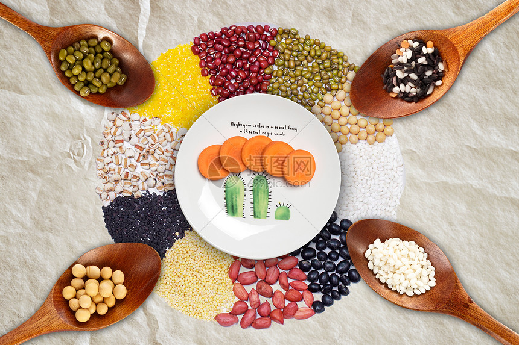

什么是健康食谱
健康的饮食食谱 可以帮助我们合理饮食，形成健康的饮食规律。 下面是给大家推荐的一个适用于日常生活中的 健康饮食食谱 。 健康的饮食食谱 应该规划到一周以内，这样有利于我们养成一种合理的健康饮食规律。 健康的饮食食谱 中的食物应该有以下几个：含有蛋白质的肉类，具有碳水化合物的米饭等主食，富含多种维生素的蔬菜、水果等。
健康的饮食食谱
 中的食物应该有以下几个：含有蛋白质的肉类，具有碳水化合物的米饭等主食，富含多种维生素的蔬菜、水果等。 最后应该注意几样食物的 健康饮食搭配 ，不可过量吃，也不可少吃。 星期一 早餐：馒头和草莓酱、牛奶（或豆奶）、煮荷包蛋１个、酱黄瓜。 水果：西红柿或白萝卜１个。 中餐：荞麦大米饭、香菇菜心、糖醋带鱼、豆腐血旺、丝瓜汤。 晚餐：绿豆粥、白菜猪肉包子、虾皮冬瓜。